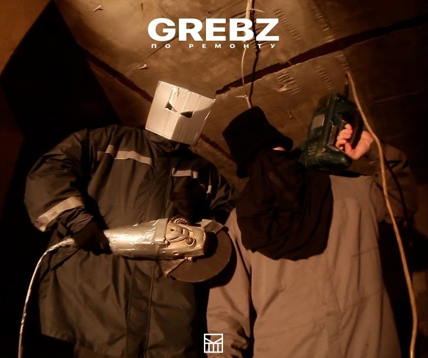

Grebz "По ремонту"
Ещё один бэнгер!
Группа "Грибы", спустя неделю после выхода сингла "Контракты", вернулась с новым не менее взрывным треком "По ремонту".
Заметим, что чуть ранее 4atty aka Tilla и Симптом НЖН представили на эту песню яркий видеоклип.
Вдобавок данная композиция должна попасть в новый альбом группы, премьера которого, вероятно, состоится уже на следующей неделе.
Буквально на днях у Grebz выходил клип "Контракты".